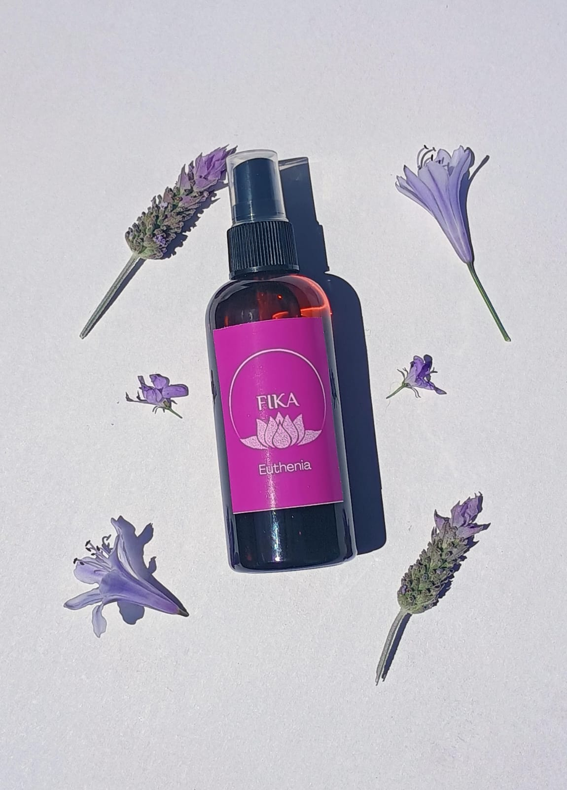

EUTHENIA
Su nombre se origina por una diosa griega la cual significaba la prosperidad que es lo cual queremos manifestar con esta bruma el encontrar la prosperidad en todos los ámbitos de la vida de nuestros clientes, esta contiene 4 de naranja, 2 de anias y 4 de vainilla.
$7000